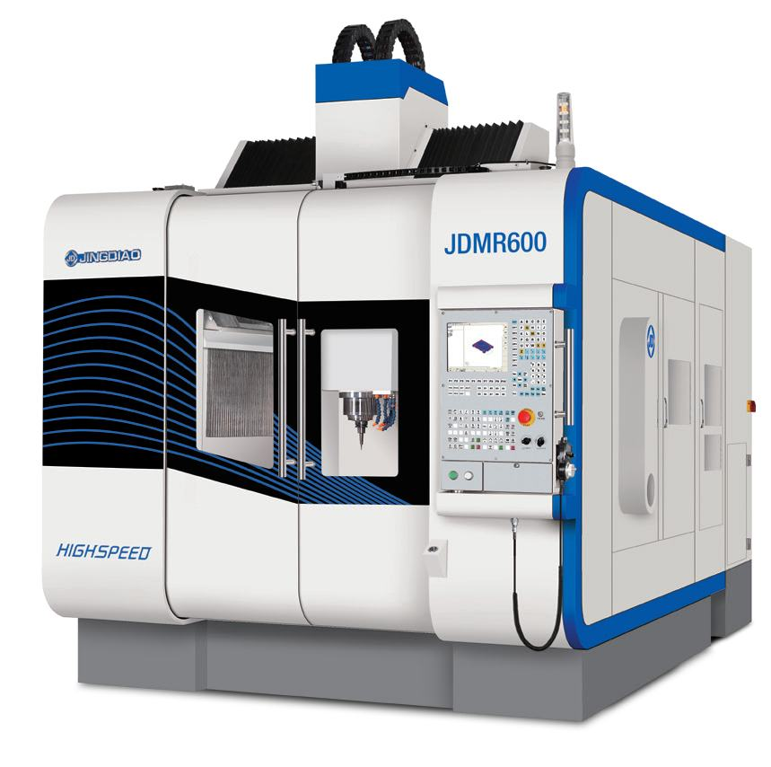
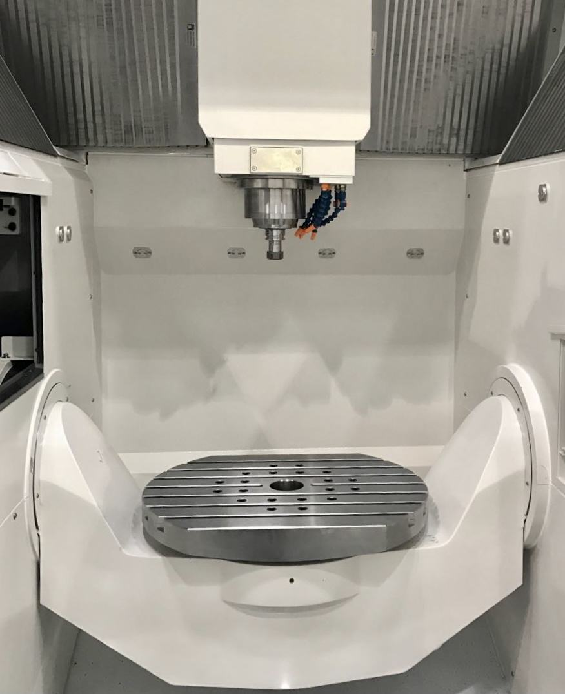
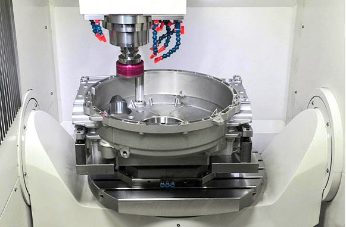

项目为JDMR600五轴高速加工中心的整体设计，是一款适用于中大型精密模具和复杂零件批量加工的精雕五轴高速加工中心。
JDMR600五轴高速加工中心采用动梁龙门式结构，配摇篮式双轴直驱转台，并采用全闭环控制技术和驱动部件冷却技术，稳定具备了“0.1μm进给和1μm切削”加工能力，精密加工能力和稳定性成功对标国际一流品牌。机床采用的精雕主轴，是北京精雕参与的国家“高档数控机床与基础制造装备”科技重大专项（04专项）课题“高速精密电主轴在中高档数控机床上的示范应用”（课题编号：2015ZX04005005）的课题产品，具备“高转速低振动”特点，可实现铣削、磨削、镗孔、钻孔和攻丝等复合加工。A轴转台采用双侧电机同步驱动技术，在国内为首创，获得国家发明专利授权。机床外观获得国家外观专利授权，重视人机工程和绿色制造的理念，具有圆润充盈的外观和律动的曲线，外观以白、蓝、灰、黑为主色，简洁大方，提升品牌形象，护罩表面采用环保喷塑工艺，使其外表面历久弥新；在人机工程设计上，根据目标客户的人体平均测量数据，设定控制台、工作台和观察视窗等要素的位置，减少使用者的身体运动和疲劳度；设计了多个检修门，满足维护保养和全面维修的需求，顶门可开启，方便使用天车进行重型工件上下料，顶门的自动开合机构获得国家专利授权。
同时，JDMR600五轴高速加工中心创新性地将“在机测量和智能修正”技术集成于精雕JD50数控系统和精雕CAD/CAM软件中，使数控机床有了眼睛和智脑，一方面成功解决了精密加工过程的人工测量和机床精度不匹配问题，提高了加工精度和产品质量，另一方面改变了传统离机检测的方式，使生产过程得以稳定和连续，荣获2018年“中国智能制造十大科技进展”。
此外，JDMR600五轴高速加工中心利用虚拟加工技术，在CAM软件中映射物理环境，通过软件端模拟，实现工艺要素优化，提升工艺过程的安全性和一次加工的成功率，有效减少了由于反复试加工而造成的时间和材料浪费，大大降低了生产成本。上述两项技术均为国内首创，开创了机械加工的新模式，引领了行业发展，为中国制造业实现转型升级，提升国产数控机床在国际市场的竞争力做出了贡献。
JDMR600五轴高速加工中心为全闭环五轴加工中心，适用于大型精密模具和金属批量加工，由北京精雕科技集团有限公司全部自主研发设计，拥有独立自主知识产权。
项目以客户需求为导向，精益求精为目标，设计过程注重用户体验提升及企业文化传达，融合了机械设计、工业设计、软件设计、工艺设计等多种专业技术，并通过在机测量和智能修正技术、虚拟加工技术的设计研发，帮助传统制造业转型升级，提升工业的智能发展水平，促进行业的可持续发展。
（1）加工中心结构设计
JDMR600高速加工中心采用动梁龙门和摇篮式双轴转台结构，A轴率先在国内采用两侧电机驱动技术，整机动态性能好、抗切削振动能力强、负重能力强，加工效率和加工精度高。双驱技术由北京精雕率先在国内使用，获得了国家发明专利授权，是一项涉及结构设计、制造、安装、控制技术等方面的高端技术，是研发大型机床的前提，是提高机床性能的重要措施，这项技术的研究和应用，为北京精雕在大型机床设计和制造方面，积累了宝贵的经验。在设计过程中，项目采用有限元方法，对JDMR600高速加工中心的床身、横梁等结构件进行拓扑优化，提高了床身动态特性，减少了机床结构件的重量，显著降低了生产成本，提升了企业的经济效益。
（2）配套电主轴
JDMR600五轴高速加工中心配套使用的电主轴为国家“高档数控机床与基础制造装备”科技重大专项（04专项）课题“高速精密电主轴在中高档数控机床上的示范应用”（课题编号：2015ZX04005005）的成果产品，具备“高转速低振动”特点，可实现铣削、磨削、镗孔、钻孔和攻丝等复合加工。
（3）“在机测量和智能修正”技术
传统数控切削加工就是把数字模型变成实物零件的过程，在加工过程中需要人工参与，影响了生产过程的自动化和智能化，造成产品加工周期长，成本高，并且无法保证产品加工品质。人工操作不仅破坏了生产的连续性和稳定性，还造成了生产过程中的精度不匹配。
“在机测量和智能修正”技术是北京精雕独创提出的一项应用于精雕精密加工中心的高新技术，让数控机床有了眼睛和智脑，通过精准测量和过程管控，使得数控机床在运行时能够主动获取零件制造信息，大幅提升数控机床的智能化和自动化能力，不仅可以消除人工操作误差，节约加工时间，降低消耗、减少成本、增加产量、提高效益，而且还可以保证产品的质量，增强产品的竞争力，实现了“制检合一”的制造模式，帮助用户完成了“提质增效”的目标。该技术使精密加工精度不再依赖人工的经验来保证，创造了用户全新的精加工体验，成为打造智能工厂，实现制能制造的有力推手。该技术入选“2018年中国智能制造十大科技进展”，其推广和应用，将对行业起到极大促进作用，为推动新时代工业变革贡献力量。
（4）虚拟加工技术
传统五轴工艺开发过程，为了保证工艺准确无误，需要进行上机试切，若试切结果不正确，则需要在软件端调试五轴工艺，如此反复数次，耗时耗力。并且，在实际生产中涉及很多生产物料，如机床、刀具、刀柄、工装夹具和毛坯等，这些物料信息需从工艺端经由备料端准确无误地传递至操作端，任何一个物料准备不及时或不当都可能导致生产不连续，严重时出现加工事故。
该项目利用虚拟加工技术，融合精雕JD50数控系统、CAD/CAM软件、DT编程等技术，将机床、刀具、夹具等生产要素镜像到软件中，在软件中构建与真实加工场景一模一样的仿真环境，同步引入现场管理技术，在软件中完成五轴加工工艺的开发和优化，规避了各种加工风险，还能使各项工作同步进行，该技术创新性的改变了传统的加工试制过程，减少了反复的人工操作，极大提高了五轴工艺开发效率和加工制造效率，实现了快速制造，同时减少了材料的浪费，实现了绿色制造和节能制造。虚拟加工技术突破性的解决了操作人员从三轴机床到五轴机床的不适应性，操作人员通过在电脑前的模拟操作便可完成整个加工流程的模拟，创造了全新的制造业加工模式。
（5）刀具断刀在机监测系统
在CNC高速精密加工过程中，由于走刀路径不合理、切削力不稳定、工件材质不均匀等因素，刀具极易发生断裂现象。但由于刀具尺寸小、切削用量少、切削液喷淋等影响，刀具断刀后不能被及时发现和更换，就会影响后续加工流程，浪费大量加工时间。
因此，本项目在JDMR600高速加工中心中应用了由北京精雕独立自主研发的刀具断刀在机监测系统，该系统主要由高频振动传感器、振动监测模块、数据监测软件三部分组成。通过在主轴、工件、夹具等关键部位（加工时的振动影响区域即可）安装振动传感器，实时监测加工过程中的振动“特征信号”，来分辨当前刀具是否断刀。如果发生断刀，可通过机床发出包含断刀时间的报警信号，并远程通知操机人员更换刀具。通过该系统的应用，可在线实时监测和判断切削过程中的刀具状态，并准确记录刀具的断刀时间，有效解决长时间加工过程中，操作人员无法及时判断刀具是否断刀的问题，帮助客户降低加工风险，提高生产效率。
（6）工业设计理念
项目在整个设计过程中，深入贯彻北京精雕的工业设计理念，从美学效果、人机工程设计和环保性等角度出发，进行JDMR600高速加工中心的设计。从美学角度，机床采用圆润充盈的外观，体现了五轴高速加工中心加工复杂曲面的特长，律动的线条象征高精密加工平稳流畅的特点，机床的色彩主要有蓝、黑、白三色，蓝色可稳定操作者的情绪，减少操作失误，黑与白的强烈对比，划分出功能区域。从人机工程角度，根据目标用户的平均人体测量数据，设定控制台、工作台和观察视窗等要素的位置，减少使用者的身体运动和疲劳感，并且设计了多个检修门，满足加工和全面维护的需求。从产品的环保性角度，采用全封闭护罩，隔绝加工过程产生的油雾和噪音进入外界环境，油雾分离系统集中收集油雾，保证使用者的身体健康，护罩表面采用环保喷塑工艺，使外表面历久弥新。
（7）“μ级管控”的质量管控理念
北京精雕的主要加工工艺和国际领先水平没有本质区别，主要区别在于生产管控。为了满足精密加工中心的生产要求，北京精雕结合公司发展战略和产品特点，创新性地提出了“μ级管控”的质量管控理念，并面向产品设计、工艺研发、生产制造过程进行全面推广实施，对产品性能和品质保证起到关键作用。“μ级管控”措施包含四部分内容：一是在产品研发环节，采用软件分析技术对机床结构、机床关键部件进行优化设计，将关键结构件精度指标控制在μ级以下；二是摆脱传统检验方式，应用精雕在机测量技术，通过精准测量和过程管控，实现“制检合一”的制造模式，保证数控机床测量精度的准确度和稳定性，实现检验过程数字化；三是数据管理全部采用JDSoft MES系统，对设计、工艺、生产流程进行信息化管理，提高管理精度，减少资源浪费，提升管理效率；四是操作过程严格执行、规范管理，通过严格的量化管控使北京精雕的产品达到更高水平。
（8）强大的应用技术支持能力
北京精雕在二十多年的发展中，始终把顺应市场，挖掘市场及客户需求作为企业经营目标，不但在认认真真地做好机床，而且还下大力气去研究精密加工技术的应用，不仅会为客户给出细致的技术方案，通过实际加工验证助推客户对精雕产品的理解和选型，并使用优质资源来确保技术方案和设备能在客户处落地，以此来推动精雕客户的发展，赢得客户的信任，为精雕产品长远立足于市场提供了根本支持。

